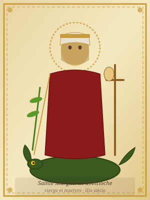

Saint Margaret of Antioch
† 304 CE (traditional)
Feast day: 20 July
Virgin and martyr of Antioch in Pisidia. Her spectacular iconography — emerging alive from a dragon — made her one of the most frequently depicted saints in medieval art. Patron of women in labor.
Biography
Margaret, daughter of a pagan priest of Antioch, was raised in the Christian faith by her nurse after her mother's death. Refusing the advances of the prefect Olybrius and declining to renounce her faith, she was subjected to terrible tortures. Thrown into prison, she was confronted by a dragon that swallowed her — but through the power of the cross she carried, she emerged unharmed from the creature's belly.
This extraordinary scene, drawn from a complex Latin textual tradition rooted in the Passio Margaretae, enjoyed remarkable iconographic fortune in the illuminated manuscripts, stained glass, and sculpture of the twelfth through fifteenth centuries. Margaret is among the Fourteen Holy Helpers invoked in times of great trial, and one of the voices that Joan of Arc declared she had heard.
In Old French, several versions of her Life are known, including one by Wace. Her patronage of women in labor explains the wide distribution of her Life in manuscripts compiled for an aristocratic or bourgeois female readership.
Add a presentation of the vernacular versions documented in this corpus.
Manuscripts Containing the Life of Saint Margaret
No manuscripts yet recorded in this database
BnF fr. 23112 contains Lives of Saint Martin, Saint Nicholas, and Saint Catherine but not a Life of Saint Margaret. Further manuscripts containing this Life will be added to the corpus in due course.
Identify and add manuscripts containing the Life of Saint Margaret. Update MANUSCRIPT_IDS and SAINT_KEYWORDS in scraper/scrape_jonas.py.